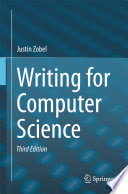

Recommend book to read for your first time thesis
Thesis Guide Book of Walden University
January 2010https://catalog.waldenu.edu/mime/media/view/7/7528/Thesis_GBook.pdfU
.
Thesis Manual of AUB
Beirut,Lebanon (January 1999)http://website.aub.edu.lb/ulibraries/Documents/ThesisManual/thesis-manual.pdf
.
Thesis Format Guide of Clark University
Denise Robertson (2015)https://www2.clarku.edu/graduate/current/formatguides/thesis-format-guide.pdf
.
How to Write a Better Thesis
David Evans, Paul Gruba, Justin Zobel ( Third Edition 2014)https://books.google.com.mm/books/about/How_to_Write_a_Better_Thesis.html?id=XwG7BAAAQBAJ&printsec=frontcover&source=kp_read_button&redir_esc=y#v=onepage&q&f=false.

Writing for Computer Science
Justin Zobel (Third Edition 2014)https://books.google.com.mm/books/about/Writing_for_Computer_Science.html?id=LWCYBgAAQBAJ&printsec=frontcover&source=kp_read_button&redir_esc=y#v=onepage&q&f=false.
How To Write Your First Thesis
Paul Gruba, Justin Zobel (2017)https://books.google.com.mm/books/about/How_To_Write_Your_First_Thesis.html?id=IqYyDwAAQBAJ&printsec=frontcover&source=kp_read_button&redir_esc=y#v=onepage&q&f=false.
How to Write a Master's Thesis
Yvonne N. Bui(University of San Francisco)https://books.google.com.mm/books/about/How_to_Write_a_Master_s_Thesis.html?id=ZzNHDqOP0R0C&printsec=frontcover&source=kp_read_button&redir_esc=y#v=onepage&q&f=false.
Writing the Winning Thesis or Dissertation
Randy L. Joyner, Willian A. Rouse, Allan A. Glatthornhttps://books.google.com.mm/books/about/Writing_the_Winning_Thesis_Or_Dissertati.html?id=fUZnuzEh4TsC&printsec=frontcover&source=kp_read_button&redir_esc=y#v=onepage&q&f=false .
Surviving Your Dissertation(4th Edition)
Kjell Erik Rudestam, Rae R. Newtonhttps://books.google.com.mm/books/about/Surviving_Your_Dissertation.html?id=gU6LBAAAQBAJprintsec=frontcover&source=kp_read_button&redir_esc=y#v=onepage&q&f=false.
How to Write a Thesis
Umberto Eco (2015)https://books.google.com.mm/books/about/How_to_Write_a_Thesis.html?id=u3j3BgAAQBAJ&printsec=frontcover&source=kp_read_button&redir_esc=y#v=onepage&q&f=false.
Secrets for a Successful Dissertation
Jacqueline Fitzpatrick, Jan Secrist, Debra J. Wrighthttps://books.google.com.mm/books/about/Secrets_for_a_Successful_Dissertation.html?id=76l1AwAAQBAJ&printsec=frontcover&source=kp_read_button&redir_esc=y#v=onepage&q&f=false.
A Manual for Writers of Research Papers, Theses , and Dissertations
Kate L. Turabianhttps://books.google.com.mm/books/about/A_Manual_for_Writers_of_Research_Papers.html?id=i6aXJLeZ2OMC&printsec=frontcover&source=kp_read_button&redir_esc=y#v=onepage&q&f=false.
How to Examine a Thesis
Rowena Murray, Lynne Pearcehttps://books.google.com.mm/books/about/How_to_Examine_a_Thesis.html?id=7B9EBgAAQBAJ&printsec=frontcover&source=kp_read_button&redir_esc=y#v=onepage&q&f=false.